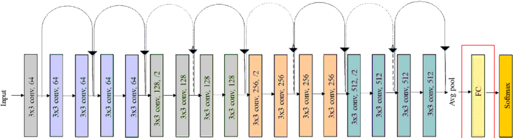
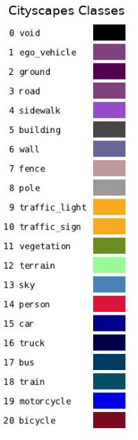
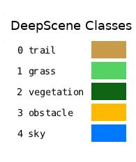
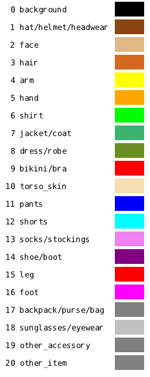
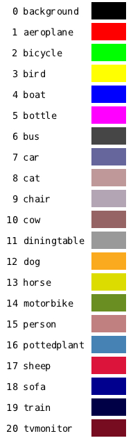
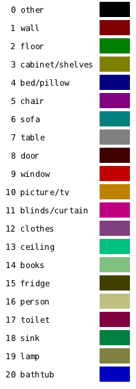

Overall Explanation
Overview
For our previous exercises, we took a look at an image recognition methods where we generalized and classified objects within the image. Semantic segmentation bases its classification on image recognition but instead of classifying objects within the image, it classifies each pixels. This method is especially useful when it comes to environmental perceptions, thanks to its dense per-pixel classifications, the model can percieve many potential objects per scene, including scene foregorounds and backgrounds.
Semantic Segmentation acheives its per-pixel classification by convolutionalizing a pre-trained image recognition backbone, (for our case ResNet18) into a Fully Convolutional Network (FCN) capable of per-pixel labeling.
Semantic Segmentation is used and extended in many different applications, from self driving cars, to image segmentation and classification for MRI images.
As you may have noticed, we have 5 different segmentation methods and results on our “follow along” step. This is the result of our FCN-ResNet18 model being trained on different dataset for different applications.
Following are the datasets used and their applications:
Dataset Name |
Contents |
–network |
|---|---|---|
Cityscapes |
Dataset with urban street scenes |
fcn-resnet18-cityscapes |
DeepScene |
Dataset with outdoor scenes including vegetations |
fcn-resnet18-deepscene |
Multi-Human |
Dataset with different scenes with people |
fcn-resnet18-mhp |
Pascal VOC |
Dataset with various object, animals and people |
fcn-resnet18-voc |
SUN RGB-D |
Dataset with indoor scenes (indoor objects) |
fcn-resnet18-sun |
FCN-ResNet18
Our previous image recognition models such as ResNet18 uses fully-connected (fc) layer as the output layer. This is done to classify the convolutional output from the middle layer.
{kind=link}
Having GC layer allows us to classify the entire image but it leads us to a big problems:
Location information of where the classified object is within the image is lost.
To solve this problem, convolutionalizing method is used.
Convolutionalizing
In order to retain the location information, we need to be able to conduct per-pixel classification. The convolutionalizing method allows us to replace the last fully-connected layer with convolutional layer. This last convolutional layer allows us to output a heatmap with each pixel classifified.
Within the convolutional output later, different deconvolutional methods are applied to approximate the segmentation to the real picture as close as possible.
Here are all the datasets trained on FCN-ResNet18 with their labels:
Dataset Name |
labels |
|---|---|
Cityscapes |
 |
DeepScene |
 |
Multi-Human |
 |
Pascal VOC |
 |
SUN RGB-D |
 |
{kind=link}
{kind=link}
{kind=link}
{kind=link}
{kind=link}